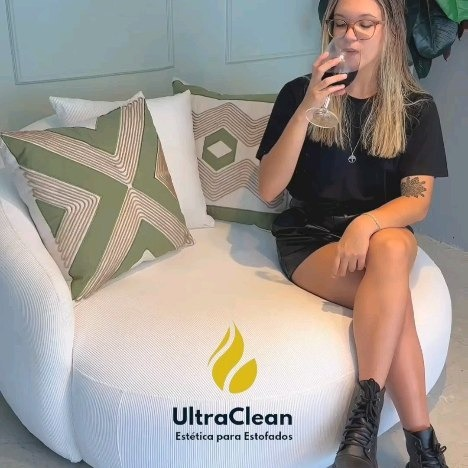
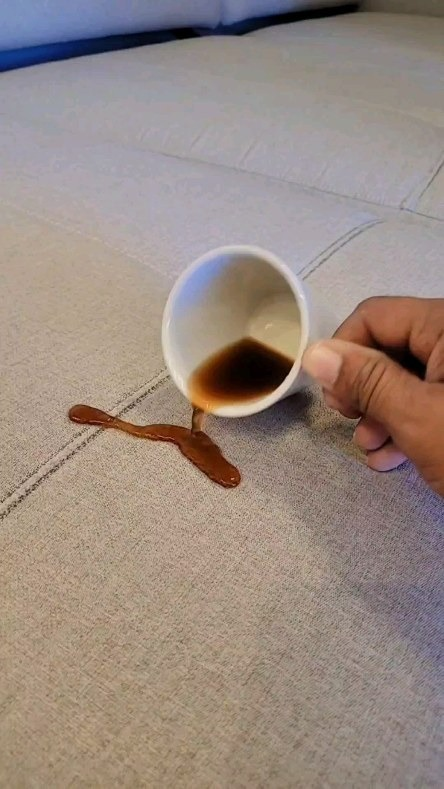
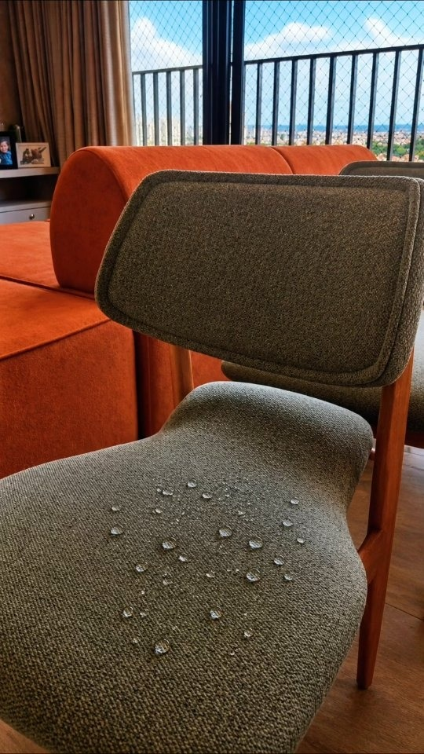
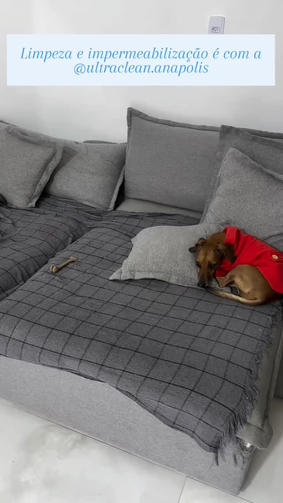

A UltraClean Anápolis aplica tecnologia de impermeabilização blindada que cria um escudo protetor invisível nas fibras do tecido. Líquidos derramados viram gotas e são facilmente removidos com papel toalha, sem penetrar na espuma e sem risco de mofo ou manchas.

Veja os testes reais realizados em estofados de clientes residenciais e comerciais em Anápolis.

Acidente com CaféCafé derramado acidentalmente não penetra na trama. O líquido fica encapsulado na superfície, bastando um papel toalha para absorver 100% sem esfregar.

Nanotecnologia PuraCada fibra têxtil recebe um filme protetor invisível que impede que qualquer molécula líquida umedeça a camada interna do móvel.

Pet Friendly & SeguroProduto dermatologicamente testado, sem componentes explosivos ou solventes perigosos. Liberdade total para seus bichinhos curtirem a sala.
Antes de impermeabilizar, recomendamos nossa Higienização Profunda para extrair sujeiras antigas e renovar a fibra.
↔️ Arraste para comparar o Antes e o Depois
Com o tempo, o tecido acumula células mortas, ácaros e gordura corporal invisível. O Método Ultra Clean realiza uma extração profunda por injeção e sucção a vácuo, seguida de aplicação de flotadores bactericidas hospitalares.
Atendemos residências, apartamentos, escritórios e consultórios em toda Anápolis com hora marcada.
Aplicação nanotecnológica repelente a líquidos frios e quentes (café, vinho, refrigerante, urina pet) sem alterar textura ou cor.
Extração italiana a vácuo com produtos atóxicos ANVISA que removem manchas severas, odores de mofo e alérgenos.
A melhor experiência: higienizamos seu móvel profundamente para retirar manchas antigas e em seguida aplicamos a impermeabilização blindada.
Tratamento antialérgico profundo para colchões de solteiro, casal, queen e king. Respire ar puro durante as noites de sono.
Proteja as cadeiras onde a família faz as refeições contra molhos, gorduras e derramamento de bebidas durante jantares.
Higienização profunda e blindagem dos bancos de tecido do seu carro. Proteção para quem transporta crianças ou pets.
Selecione suas preferências abaixo para gerar uma estimativa imediata e enviar direto no WhatsApp da UltraClean.
*Valor orientativo. O valor exato é confirmado via foto no WhatsApp conforme o tamanho real da peça e grau de sujidade.
Tudo feito no conforto da sua casa, sem bagunça, sem respingos no piso e com pontualidade.
Você manda uma foto do seu estofado pelo WhatsApp e recebe o valor exato e opções de horários em poucos minutos.
Nossa equipe chega no dia e hora marcados com todo o maquinário profissional e protetores para o piso da sua sala.
Extração profunda de sujeiras e ácaros com produtos ANVISA, seguida da pulverização homogênea da nanoproteção.
Você realiza o teste de repelência junto com o técnico e recebe as orientações de manutenção para máxima durabilidade.
Satisfação comprovada no Google Meu Negócio com nota 5.0 estrelas.
"Fiz a impermeabilização do meu sofá retrátil novo de linho claro e fiquei maravilhada! Dias depois derrubaram suco de uva e foi só colocar o papel toalha por cima que sugou tudo, não ficou uma mancha sequer. Recomendo demais a UltraClean!"
"Excelente atendimento! Fizeram o combo de limpeza profunda + impermeabilização no sofá e nas 6 cadeiras de jantar. Trabalho impecável, equipe educada, não molhou o chão de madeira e o resultado superou todas as expectativas."
"Tenho dois cachorros em casa e o sofá vivia com cheiro e pelos. A higienização da UltraClean tirou todo o cheiro e a blindagem agora não deixa o tecido absorver nada. Vale cada centavo investido na durabilidade do móvel."
Esclarecemos os principais pontos técnicos sobre a aplicação e a manutenção do seu estofado.
Não! Risco zero. A UltraClean utiliza exclusivamente produtos de nanotecnologia à base de água/solventes não inflamáveis de última geração, regulamentados e homologados pela ANVISA. É 100% seguro para aplicação dentro de apartamentos e casas habitadas, sem vapores tóxicos para sua família ou animais de estimação.
Absolutamente não. Nossa nanotecnologia age envolvendo individualmente cada microfilamento têxtil, preservando integralmente o toque aveludado, a maciez e a respirabilidade original do tecido. Ele não fica plastificado e nem com brilho artificial.
A proteção tem durabilidade média de 1 a 2 anos, variando de acordo com o fluxo de uso e a forma de limpeza diária. Entregamos um guia prático ensinando como fazer a limpeza de manutenção para que a blindagem dure o máximo possível.
É simples e rápido: basta pegar uma folha de papel toalha ou pano de microfibra seco e apenas encostar sobre a poça líquida. O papel absorverá o líquido por capilaridade instantaneamente, sem que você precise esfregar ou usar sabão.
Se o sofá já foi usado por algumas semanas ou meses, sim! A impermeabilização fecha as fibras; se houver poeira ou gordura corporal residual, ela pode fixar a sujeira. Por isso temos o nosso Combo Ouro, onde fazemos a higienização profunda e em seguida a blindagem com um desconto especial.
Aceitamos PIX, cartões de crédito e débito com possibilidade de parcelamento. O agendamento é feito pelo WhatsApp no dia e turno de sua preferência (manhã ou tarde), de segunda a sábado.
Envie uma foto do seu estofado pelo WhatsApp e receba a avaliação técnica e orçamento sem compromisso.
Olá! Precisa de orçamento para impermeabilização ou limpeza?